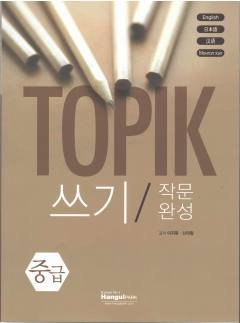

TWTOPIK imtihonining yozish qismiga tayyorgarlik ko'rish uchun amaliy qo'llanma.
Ushbu qo'llanma TOPIK imtihonining yozish (쓰기) qismiga tayyorgarlik ko'rish uchun mo'ljallangan bo'lib, bosqichma-bosqich yozma ishlar va insho yozish ko'nikmalarini rivojlantiradi. Kitobda fikrlarni jamlash, reja tuzish va matnni shakllantirish bo'yicha amaliy tavsiyalar berilgan.